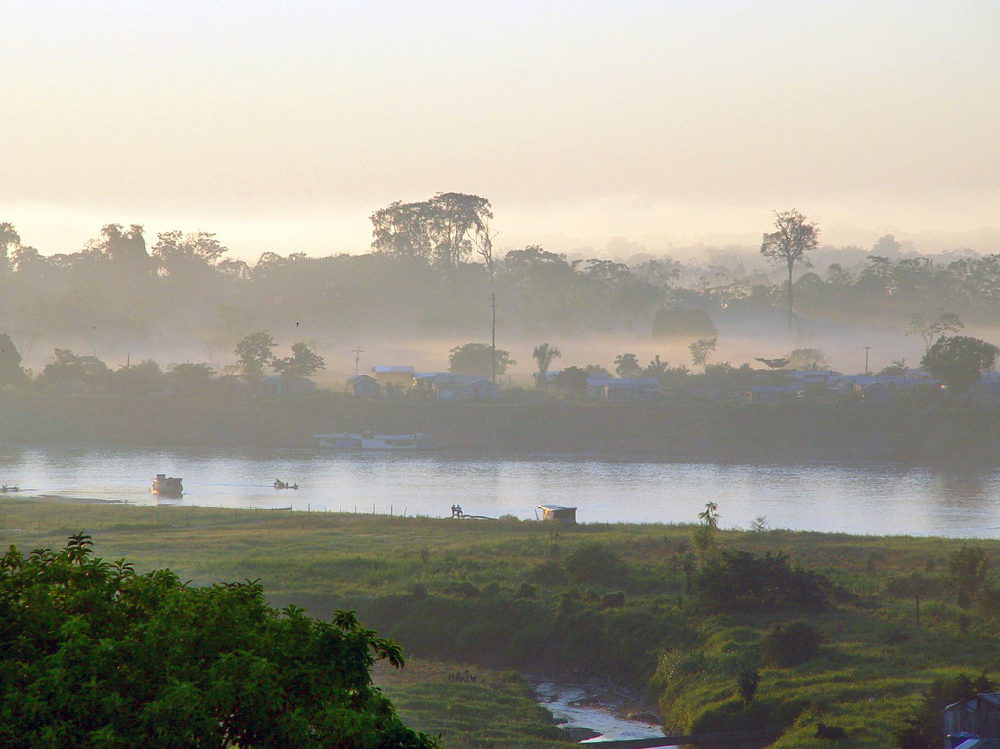

Catálogo CZS
Informação, utilidade pública, cultura, serviços e negócios em uma plataforma com presença regional.
DO VALE DO JURUÁ PARA O MUNDO
A CZS Labs transforma ideias locais em produtos, sistemas e experiências digitais com identidade própria, estrutura real e ambição global.

BUILD · TECH · IMPACT
UMA BASE TECNOLÓGICA PARA QUEM VIVE AQUI
Queremos capacidade instalada no Juruá: pessoas que desenham, desenvolvem, automatizam, comunicam e lançam soluções que respeitam o território e circulam além dele.
01 Compramos tecnologia e conhecimento.
02 Fomentamos quem constrói no território.
03 Desenvolvemos produtos que ficam de pé.
04 Escalamos impacto com autonomia.
NOSSA PLATAFORMA REGIONAL
Da notícia de utilidade pública aos serviços, da cultura aos negócios, o portal é a base pública de uma rede que aproxima pessoas, empresas e oportunidades.
Acessar Catálogo CZS →SISTEMAS, MARCAS E EXPERIÊNCIAS QUE JÁ TOMARAM FORMA
Informação, utilidade pública, cultura, serviços e negócios em uma plataforma com presença regional.

Ecossistema de entretenimento, comunidade e operações digitais.

Gestão de empresas, telas, campanhas, playlists e programação de mídia.

Vitrine, atendimento e jornada de compra pensada para o varejo local.

Direção de arte, mecânicas digitais e diversão para transformar ideias em jogo.

Web, automação, audiovisual, design, IA e operações trabalhando como um único sistema.

Identidade visual, fotografia, sites e movimento para pessoas e marcas.
CINEMA DIGITAL
Interfaces ganham narrativa quando design, imagem e movimento trabalham juntos.
DESENHAMOS A EXPERIÊNCIA E A ESTRUTURA POR TRÁS DELA
Fluxos para documentos, propostas, status, revisões e acessos por responsabilidade. Informação sensível fica em áreas protegidas.
Jornadas de atendimento, disponibilidade, checkout e confirmação segura por integrações assíncronas.
Sites rápidos, responsivos e editoriais para notícias, serviços, marcas, portfólios e comércio.
Painéis para rede de telas, campanhas, playlists, destinos e revisão antes da ativação.
Rotinas assistidas, análises e agentes com aprovação humana nos pontos que exigem decisão.
Direção visual, vídeos, interfaces cinematográficas, identidade e materiais que fazem o digital ser memorável.
STACK
CZS
LABS
Aplicamos e estudamos tecnologias de produto, infraestrutura, criação e automação conforme o desafio pede, sem separar a experiência visual da qualidade do sistema.
DO TERRITÓRIO À ESCALA
Entender o problema antes de desenhar a tela.
Transformar intenção em marca, interface e protótipo.
Construir o sistema, as integrações e a operação.
Colocar a solução para rodar do Juruá para fora.

CZS LABS / JURUÁ TECH FOUNDRY
Para empresas, cultura, turismo, varejo, mídia e serviços que querem sair do improviso e chegar mais longe.
Entrar no ecossistema CZS →